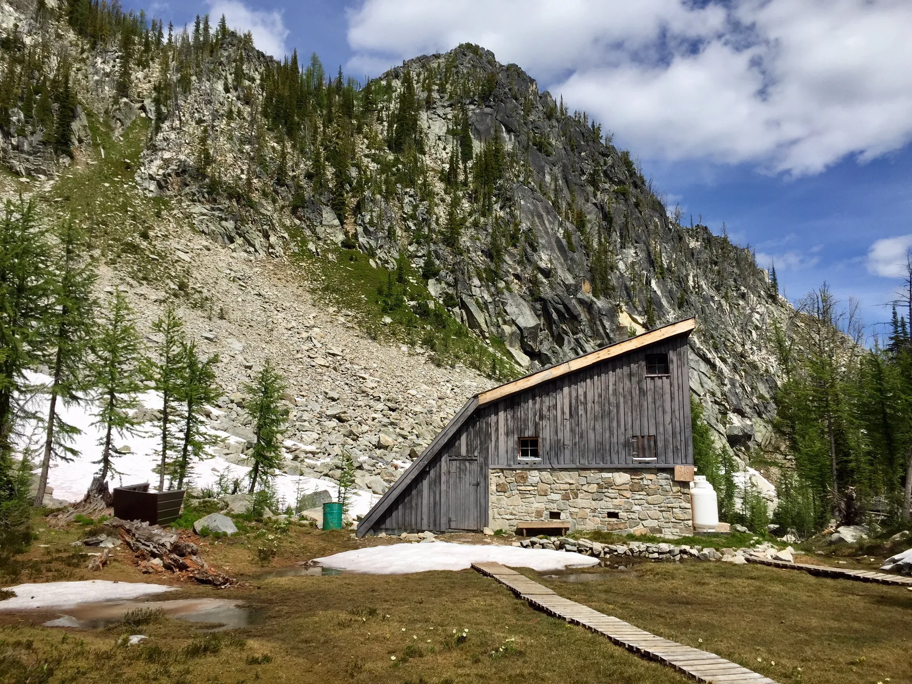

Trip Planner
Hot springs
Ainsworth hotsprings.
Probably would be cool to combine a hike in the Kokanee Glacier PP with hanging out here.
Hikes
Vahalla Provincial Park - Lucifer Peak
13.8 km and 1264 m elevation gain
4 hours driving + 7 hour hike = 11 hour day. Leave early in morning, get back late evening. Solid Saturday hike
OR: 2 nearby rec sites, drive up on friday night, hike saturday, drive back sunday whenever
Gimli Ridge
9.0 km with 895 m of elevation gain.
On the way to Lucifer Peak, same game plan but a bit less intense
Kokanee Glacier Provincial Park
There's a beer named after it so it must be worth it
Loads of hiking options, either access some of the hikes through the woodbury forest service road
There's a couple of hikes up to cabins from this direction
Or go up the Kokanee Glacier Road
There's several good hiking options to go with from this direction, this is just an example